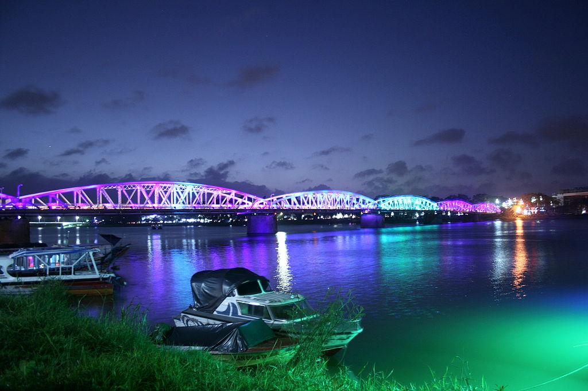

Huế - Cố đô Phong Kiến
 Huế nằm ở dải đất hẹp của miền Trung Việt Nam và là thành phố tỉnh lỵ của Thừa Thiên - Huế. Thành phố là trung tâm về nhiều mặt của miền Trung như văn hóa, chính trị, giáo dục, du lịch... Với dòng sông Hương và những di sản để lại của triều đại phong kiến, Huế, còn gọi là đất Thần Kinh hay xứ thơ, là một trong những thành phố được nhắc tới nhiều trong thơ văn và âm nhạc Việt Nam. Thành phố có hai di sản được UNESCO ở Việt Nam. Huế là đô thị cấp quốc gia của Việt Nam và có cố đô của Việt Nam thời phong kiến dưới triều nhà Nguyễn (1802 - 1945).
Huế nằm ở dải đất hẹp của miền Trung Việt Nam và là thành phố tỉnh lỵ của Thừa Thiên - Huế. Thành phố là trung tâm về nhiều mặt của miền Trung như văn hóa, chính trị, giáo dục, du lịch... Với dòng sông Hương và những di sản để lại của triều đại phong kiến, Huế, còn gọi là đất Thần Kinh hay xứ thơ, là một trong những thành phố được nhắc tới nhiều trong thơ văn và âm nhạc Việt Nam. Thành phố có hai di sản được UNESCO ở Việt Nam. Huế là đô thị cấp quốc gia của Việt Nam và có cố đô của Việt Nam thời phong kiến dưới triều nhà Nguyễn (1802 - 1945).

Cầu Tràng Tiền về đêm
Thuận Hóa - Phú Xuân - Huế có một quá trình lịch sử hình thành và phát triển khoảng gần 7 thế kỷ (tính từ năm 1306). Trong khoảng thời gian khá dài ấy Huế đã
tích hợp được những giá trị vật chất và tinh thần quý báu để tạo nên một truyền thống văn hóa Huế. Truyền thống ấy vừa mang tính đặc thù - bản sắc của một vùng
đất, không tách rời những đặc điểm chung của truyền thống văn hóa dân tộc Việt Nam; trong tiến trình hình thành văn hóa Huế có sự tác động của văn hóa Đông Sơn
do các lớp cư dân cổ phía Bắc mang vào trước thế kỷ 2 và sau thế kỷ 13 hỗn dung với thành phần văn hóa Sa Huỳnh tạo nên nền văn hóa Huế - Chăm. Trong quá trình
phát triển, chuyển biến còn chịu ảnh hưởng của các luồng văn hóa khác các nước trong khu vực Đông Nam Á, Trung Quốc, Ấn Độ, phương Tây...
 Văn hóa Huế được tạo nên bởi sự đặc sắc
về tinh thần, đa dạng về loại hình, phong phú về đặc trưng với nét được thể hiện rất phong phú trên nhiều lĩnh vực như: văn học, âm nhạc, sân khấu, mỹ thuật,
phong tục tập quán, lễ hội, lề lối ứng xử, ăn - mặc - ở, phong cách giao tiếp, phong cách sống...
Văn hóa Huế được tạo nên bởi sự đặc sắc
về tinh thần, đa dạng về loại hình, phong phú về đặc trưng với nét được thể hiện rất phong phú trên nhiều lĩnh vực như: văn học, âm nhạc, sân khấu, mỹ thuật,
phong tục tập quán, lễ hội, lề lối ứng xử, ăn - mặc - ở, phong cách giao tiếp, phong cách sống...
Kiến trúc ở Huế phong phú và đa dạng: có kiến trúc cung đình và kiến trúc dân gian, kiến trúc tôn giáo và kiến trúc đền miếu, kiến trúc truyền thống và kiến
trúc hiện đại... những công trình kiến trúc cổ công phu, đồ sộ nhất chính là Quần thể di tích Cố đô Huế hay Quần thể di tích Huế. Đó là những di tích
lịch sử - văn hóa do triều Nguyễn chủ trương xây dựng trong khoảng thời gian từ đầu thế kỷ 19 đến nửa đầu thế kỷ 20 trên địa bàn kinh đô Huế xưa; nay thuộc phạm
vi thành phố Huế và một vài vùng phụ cận thuộc tỉnh Thừa Thiên-Huế, Việt Nam.
Bắt nguồn từ 8 loại lễ nhạc cung đình thời Lê là giao nhạc, miếu nhạc, ngũ tự nhạc, cửu nhật nguyệt giao trung nhạc, đại triều nhạc, thường triều nhạc, đại
yến cửu tấu nhạc, cung trung nhạc, đến triều Nguyễn lễ nhạc cung đình Việt Nam đã phát triển thành hai loại hình đại nhạc và nhã nhạc (tiểu nhạc) với một hệ
thống các bài bản lớn.
Ca Huế có 15 làn điệu lớn, từ múa lân, múa tứ linh, múa cung, tiểu sử, múa yên tiệc, múa trình diễn tích tuồng. Nhiều vũ điệu có tính hoành tráng, quy mô
diễn viên đông, phô diễn được vẻ đẹp rộn ràng, lấp lánh và kỳ thuật, kỹ xảo của múa hát cung đình Việt Nam thể hiện được sự phát triển nâng cao múa hát cổ
truyền của người Việt.
Ca Huế là một hệ thống bài bản phong phú gồm khoảng 60 tác phẩm thanh nhạc và khí nhạc theo hai điệu thức lớn là điệu Bắc, điệu Nam và một hệ
thống "hơi" diễn tả nhiều sắc thái tình cảm đặc trưng. Điệu Bắc gồm những bài ca mang âm hưởng vui tươi, trang trọng. Điệu Nam là những bài ca điệu
buồn, ai non, ai oán. Bài bản Ca Huế có cấu trúc chặt chẽ, nghiêm ngặt, trải qua quá trình phát triển lâu dài đã trở thành nhạc cổ điển hoàn chỉnh, mang nhiều
yếu tố "chuyên nghiệp", bác học về câu trúc, ca từ và phong cách biểu diễn. Di sản ca Huế là dân nhạc Huế với bộ ngũ tuyệt Tranh, Tỳ, Nhị, Nguyệt, Tam,
xen với Bầu, Sáo và bộ gõ trống Huế, sanh loan, sanh tiền.
Kỹ thuật đàn và hát ca Huế đặc biệt tinh tế nhưng ca Huế lại mang đậm sắc thái địa phương, phát sinh từ tiếng nói, giọng nói của người Huế nên gần gũi với
Hò Huế, Lý Huế; là chiếc cầu nối giữa nhạc cung đình và âm nhạc dân gian.
 Phát triển sớm từ thế kỷ 17 dưới thời các chúa Nguyễn.
Bên triều Nguyễn, tuồng được xem là quốc kịch và triều đình Huế đã tạo điều kiện thuận lợi cho tuồng phát triển. Trong Đại Nội Huế có nhà hát Duyệt Thị Đường,
Tĩnh Quang viện, Thông Minh Đường. Tại Khiêm Lăng, có Minh Khiêm Đường. Thói hình Hàng để thành lập Thanh Bình thự làm nơi dạy diễn viên tuồng. Thời thịnh tụ Bắc
đã thành lập Ban Hiệp Thự chuyên nhuận sắc, chỉnh lý, hiệu đính và sáng tác tuồng.
Phát triển sớm từ thế kỷ 17 dưới thời các chúa Nguyễn.
Bên triều Nguyễn, tuồng được xem là quốc kịch và triều đình Huế đã tạo điều kiện thuận lợi cho tuồng phát triển. Trong Đại Nội Huế có nhà hát Duyệt Thị Đường,
Tĩnh Quang viện, Thông Minh Đường. Tại Khiêm Lăng, có Minh Khiêm Đường. Thói hình Hàng để thành lập Thanh Bình thự làm nơi dạy diễn viên tuồng. Thời thịnh tụ Bắc
đã thành lập Ban Hiệp Thự chuyên nhuận sắc, chỉnh lý, hiệu đính và sáng tác tuồng.
Với những kiệt tác điêu khắc trang trí bắt nguồn từ những mẫu mực của Trung Hoa, các nghệ nhân Việt Nam đã tạo nên một bản sắc nghệ thuật trang trí với những
nét độc đáo mang cá tính Huế. Nghệ thuật trang trí mỹ thuật Huế còn tiếp thu những tinh hoa của nghệ thuật Chăm, đặc biệt là tiếp thu nghệ thuật trang trí Tây
phương. Trang trí cung đình Huế còn ảnh hưởng của các luồng văn hóa khác các nước trong khu vực Đông Nam Á, Trung Quốc, Ấn Độ, phương Tây. Trang trí cung đình
Huế còn tiếp thu nghệ thuật dân gian Việt Nam. Nhiều loại hình thủ công mỹ nghệ truyền thống cũng có những nét độc đáo riêng, từ đồ đồng, pháp lam, kim hoàn,
thêu, làm nón, sơn thếp vàng, chạm khắc xương và ngọc ngà, khảm sành sứ, làm vàng bạc, dệt, thêu... đã được các tượng cục các triều Nguyễn nâng lên thành những
nghệ thuật tinh xảo, sang trọng. Về hội họa nhiều họa sĩ nổi tiếng về tranh thủy mặc sơn thủy, tranh lụa, tranh gương, các ấn phẩm nhất thi nhất họa đặc sắc,
đặc biệt, tuồng Huế xuất hiện người họa sĩ vẽ tranh sơn dầu đầu tiên ở Việt Nam là họa sĩ Lê Văn Miến [34] (1870-1912)... Về điêu khắc, có đồ đá đã đánh dấu một
thời kỳ phát triển nhất, thể hiện bằng các tác phẩm điêu khắc trên đá, trên đồng, trên gỗ. Trong điêu khắc gỗ, phần khắc chạm gỗ trang trí với những góc chạm
nổi, chạm lộng trên các chi tiết công trình kiến trúc đạt đến sự tinh xảo và có tính thẩm mỹ cao. Về mỹ thuật ứng dụng, ngoài việc nâng cao các loại hình thủ
công mỹ nghệ truyền thống của Việt Nam, Huế còn một thời sản xuất đồ mỹ nghệ pháp lam cao cấp.